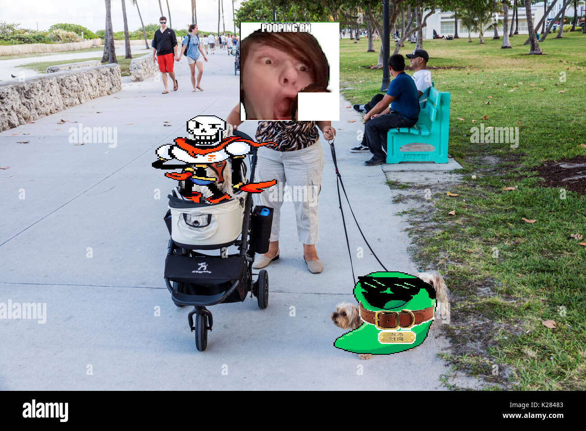
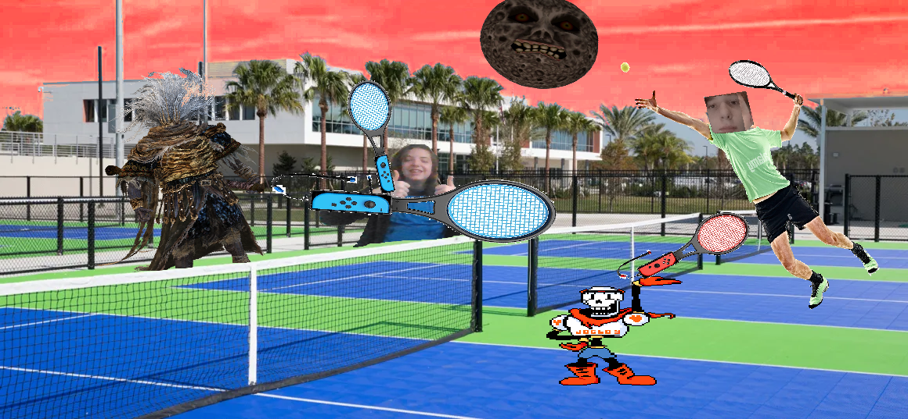
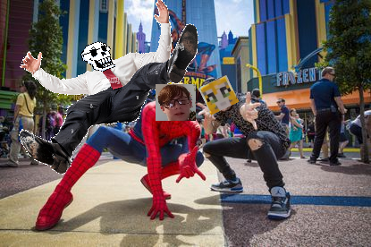
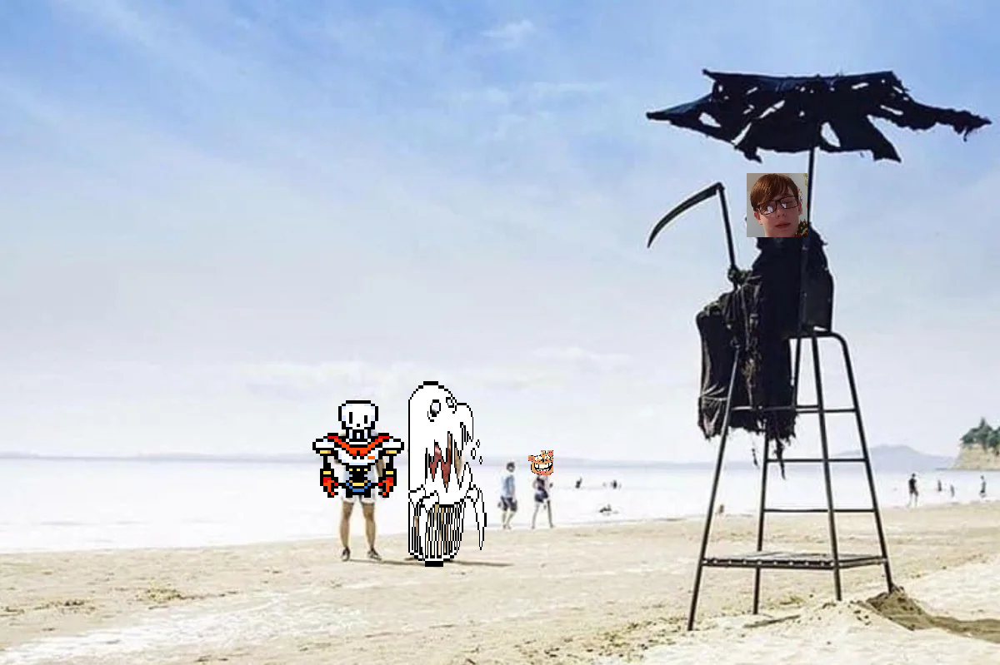
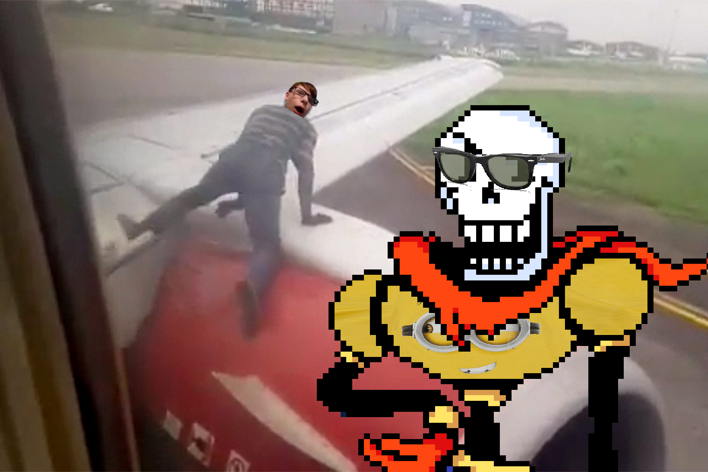

After ariving at Orlando, Papyrus and I decided to take Paul for a walk and we met up with Steven and the Nameless King.
After seeing Steven and the Nameless King, we all wanted to go somewhere as a group, so we went over to the nearest free attraction that we could find. About 20 miles away was the USTA National Campus. We played tennis and it was SUPER cool!!!
Next up we went to Universal for $120 each and it was SUPER AWESOME!!!!! Papyrus and I even got to do a meet and greet with Stampy Long Nose: the latest property of the parks company! We also noticed I couldn't see and realized that we lost Paul. Where is Paul, we need to find Paul, help me find Paul, what happened to Paul.
The Nameless King seemed like a nice guy, but I saw an evil glint in his eyes. Papyrus and I decided that it would be best to find Steven and Nameless King and follow them to the next place they went: Disney World, for $125 each. This was not a planned destination, and the cost of general nessecities there felt almost unhealthy, but we needed to find Paul. I couldn't see without my seeing eye dog. When we made it to Disney we sadly couldn't find Steven or Nameless King anywhere.

After no success in finding paul, we stumbled our way down to the beach and cried. Paul could've been kidnapped, dead, or worse. At this point in time, I had developed a severe case of Emo Syndrome, and I wore the most dead-inside clothing that I had. Luckily, Papyrus: being innocent and naive, enjoyed his time at the beach.
Overall, this trip felt unsuccessful. I came here to have a good time, but instead I lost Paul, blew all of my money on a capitalist mouse, and was impaled by the springs in my probably $15 bed. The plane ride home was sad. I missed Paul, and Papyrus was still oblivious as to what was even going on. He doesn't even know who I am, I just carried him here in a bag. Taking this bonehead on a trip here practically ruined my life, I blame everything on him. I even had to ride home on the wing of the plane because he pushed me out as a "funny prank" to go on his CoolSkeleton95 Youtube channel, I could've bought his Youtube channel with the money I was given. Without any motivation or will to live I don't know what to do with my life. Curse you Papyrus, curse you Nameless King, and curse you Steven Barnes.
